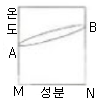
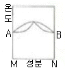
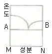
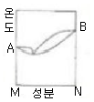
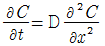
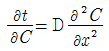
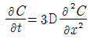
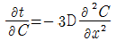

금속재료산업기사 (2016-03-06 기출문제)
1과목: 금속재료
1. 다음 중 용융점이 가장 낮은 금속은?
- Fe
- Hg
- W
- Cu
(정답률: 83%)

2. 베어링용 합금이 갖추어야 할 조건이 아닌 것은?
- 열전도율이 클 것
- 소착에 대한 저항력이 작을 것
- 충분한 점성과 인성이 있을 것
- 하중에 견딜 수 있는 내압력을 가질 것
(정답률: 79%)
3. 특수강에 첨가되는 합금원소의 효과에 대한 설명으로 틀린 것은?
- B은 경화능을 향상시킨다.
- V은 조직을 미세화시켜 강화한다.
- Cr은 담금질성을 개선시키고 페라이트 조직을 강화시키며, 뜨임취성을 일으키기 쉽다.
- Mn은 담금질성을 감소시키는 원소이며 1%이상 첨가하여 결정입자를 미세하게 하고 강을 강화시킨다.
(정답률: 63%)
4. 형상기억합금에 대한 설명으로 틀린 것은?
- 형상기억효과는 일방향(one way)성의 기구이다.
- 실용합금에는 Ni-Ti계, Cu-AI-Ni, Cu-Zn-Al합금 등이 있다.
- 형상기억합금은 Ms 점을 통과시키면 마탠자이트 상에서 오스테나이트 상이 된다.
- 처음에 주어진 특정한 모양의 것(코일형)을 소성변형 한 것이 가열에 의하여 원래의 상태로 돌아가는 현상이다.
(정답률: 68%)
5. 금속을 냉간가공하면 결정입자가 미세화 되어 재료가 단단해지는 현상은?
- 가공경화
- 석출경화
- 시효경화
- 표면경화
(정답률: 80%)
6. 금속의 소성가공 방법이 아닌 것은?
- 압연
- 단조
- 주조
- 압출
(정답률: 78%)
7. 마그네슘(Mg)에 대한 설명 중 틀린 것은?
- 구상흑연주철의 첨가제로 사용된다.
- 절삭성이 양호하고 알칼리에 견딘다.
- 소성가공성이 낮아 상온변형이 곤란하다.
- 내산성이 좋으며, 고온에서 발화하지 않는다.
(정답률: 57%)
8. Al-Si합금에 대한 설명으로 옳은 것은?
- 개량처리를 하게 되면 조직이 조대화 된다.
- γ실루민은 Ai-Si 합금에 Mg을 넣어 시효성을 부여한 합금이다.
- 포정점 부근의 조성의 것을 실루민이라 하며 실용으로 사용한다.
- 실루민은 용융점이 높고 유동성이 좋지 않아 복잡한 사형주물에는 사용할 수 없다.
(정답률: 59%)
9. 강도가 크고, 고온이나 저온의 유체에 잘 견디며 불순물을 제거하는데 사용되는 금속필터 즉, 다공성이 뛰어난 재질은 어떤방법으로 제조된 것이 가장 좋은가?
- 소결
- 기계가공
- 주조가공
- 용접가공
(정답률: 78%)
10. 초전도 현상과 그에 따른 재료의 설명으로 틀린 것은?
- 일정 온도에서 전기저항이 0 이 되는 것을 초전도라 한다.
- 대부분의 금속성 초전도체는 극고온에서 초전도 현상이 나타난다.
- 호합물계 초전도 선재에는 Nb3Sn 및 V3Ga의 화합물 등이 있다.
- 합금계 초전도 재료에는 Nb – Ti, Nb – Ti –Ta 등이 있다.
(정답률: 60%)
11. 전율고용체를 만들며 치과용, 장식용으로 쓰이는 white gold에 해당되는 합금은?
- Ag-Pd-Au-Cu-Zn
- Ag-Ti-Sn-Cu-Zn
- Pt-Cu-Pb-Sn-Co
- Pt-Pb-Sn-Co-Au
(정답률: 63%)
12. Fe-C 평형상태도에서 강의 A1 변태점 온도는 약 몇 ℃ 인가?
- 723℃
- 762℃
- 910℃
- 1400℃
(정답률: 88%)
13. 니켈과 그 합금에 관한 설명으로 틀린 것은?
- 니켈의 비중은 약 8.0 이다.
- 니켈은 도금용 소재로 사용된다.
- 니켈은 인성이 풍부한 금속이다.
- 36%Ni-Fe 합금은 퍼멀로이(permalloy)로서 열팽창계수가 크다.
(정답률: 63%)
14. 18-4-1형 텅스텐계 고속도강에서 Cr의 함량은?
- 18%
- 4%
- 1%
- 0.4%
(정답률: 71%)
15. 스테인리스강에 대한 설명으로 옳은 것은?
- 18-8 스테인리스강은 페라이트계이다.
- 페라이트계 스테인리스강은 담금질하여 재질을 개선한다.
- 석출경화계 스테인리스강은 PH계로 Al, Ti, Nb 등을 첨가하여 강도를 낮춘다.
- 오스테나이트계 스테인리스강은 입계부식과 응력부식이 일어나기 쉽다.
(정답률: 58%)
16. 다음 금속 중 흑연화를 촉진하는 원소는?
- V
- Mo
- Cr
- Ni
(정답률: 42%)
17. 다이캐스팅용 아연합금의 가장 중요한 합금원소로서 합금의 강도, 경도를 증가시키고 유동성을 개선하는 것은?
- Pb
- Al
- Sn
- Cd
(정답률: 62%)
18. 7 : 3 황동에 1% 내외의 Sn을 첨가하여 내해수성을 향상시켜 증발기, 열교환기 등에 사용되는 특수 황동은?
- 델타 메탈
- 니켈 황동
- 네이벌 황동
- 애드미럴티 황동
(정답률: 80%)
19. 탄소강의 5대 원소가 아닌 것은?
- P
- S
- Cu
- Mn
(정답률: 79%)
20. 다음 중 탄소량이 가장 많은 강은?
- SM15C
- SM25C
- SM45C
- STC1⑤
(정답률: 73%)
2과목: 금속조직
21. 결정구조에 대한 설명 중 틀린 것은?
- 면심입방정의 최근접원자는 12개가 있다.
- 조필육방정의 원자충전율은 약 74% 이다.
- 면심입방정에서 원자밀도가 가장 조밀한 편은(111) 원자면이다.
- 면심입방정의 단위정에는 2개의 원자가 속해 있다.
(정답률: 64%)
22. 정삼각형의 각 정점으로부터 대변에 평행으로 10 또는 100 등분하고, 삼각형 내의 어느 점의 농도를 알려면 그 점으로부터 대변에 내린 수선의 길이를 읽어 표시하는 3원 합금의 농도 표시방법은?
- Cottrell법
- Gibbs의 삼각법
- Lever realtion법
- Roozeboom의 삼각법
(정답률: 71%)
23. 산소와 친화력이 큰 순서로 배열된 것은?
- Al ＞ Mn ＞ Fe ＞ Ni
- Mn ＞ Ni ＞ Fe ＞ Al
- Fe ＞ Mn ＞ Al ＞ Ni
- Ni ＞ Fe ＞ Mn ＞ Al
(정답률: 68%)
24. 고체를 구성하는 원자 결합 방법이 아닌 것은?
- 이온결합
- 금속결합
- 공유결합
- 수분결합
(정답률: 82%)
25. 결정립 크기와 항복강도 간의 관계를 표현하는 것은?
- Hume-Rothery 법칙
- Hall-Petch 관계식
- Peach-Koehler 관계식
- Zener-Hollomon 관계식
(정답률: 70%)
26. 격자가 완전히 규칙적인 것을 나타내는 장범위 규칙도 (R)의 표시로 옳은 것은?
- R = 0
- R = 1
- R = 2
- R = 3
(정답률: 60%)
27. 다음 중 전율고용체 형태의 합금 상태도가 아닌 것은?




(정답률: 70%)
28. 조밀육방정계 금속에서 볼 수 있는 특징적인 변형으로 슬립면에 수직으로 압축하였을 때 나타나는 것은?
- 쌍정대
- 킹크대
- 전위대
- 버거스대
(정답률: 62%)
29. 자기변태가 존재하지 않는 것은?
- Ni
- Co
- Al2O3
- Fe3C
(정답률: 65%)
30. 냉간가공 등으로 변형된 결정구조가 가열하면 내부변형이 없는 새로운 결정립으로 치환 되어지는 현상은?
- 시효
- 회복
- 재결정
- 용체화처리
(정답률: 65%)
31. 금속의 소성변형을 가능하게 하는 전위는 어떤 결함인가?
- 선결함
- 점결함
- 면결함
- 체적결함
(정답률: 64%)
32. 50%Ag-Au가 규칙격차를 만들 때 단범위 규칙도(σ)는? (단, Au는 FCC이며 이 중 6.5개가 Ag이고, 5.5개가 Au이다.)
- -0.08
- -0.5
- 0.8
- 0.5
(정답률: 40%)
33. 결정 내 원자들은 열진동을 계속하면서 고체내에 원자 확산이 진행되고 있다. 다음 금속의 열진동에 대한 설명으로 틀린 것은?
- 원자의 열진동에서 진동수는 온도에 따라 거의 변하지 않으나 진폭은 변한다.
- 일반적으로 온도가 상승하면 공격자점이 존재할 비율은 적어진다.
- 공격자점이 많아지면 결정 내의 원자 열진동 진폭은 커진다.
- 공격자점 주위에 열진동하고 있는 원자가 새로운 공격자점으로 계속 위치를 변화하며 확산이 진행된다.
(정답률: 46%)
34. 용융 금속이 응고 성장할 때 불순물이 가장 많이 모이는 곳은?
- 결정입내
- 결정입계
- 결정입내의 중심부
- 결정격자 내의 중심부
(정답률: 75%)
35. 용융금속 표면에 종자결정을 접촉시켜 이를 서서히 회전시키면서 끌어 올릴 때 이 종자 결정에 연결되어 연속적으로 성장시키는 단결정 성장방법은?
- 재결정법
- 용융대법
- Gzochralski법
- Tammann-Bridgeman법
(정답률: 46%)
36. 다음 중 고용체 강화에 대한 설명으로 틀린 것은?
- 황동에서는 고용체 강화에 의해 강도 및 연성이 증가한다.
- 고용체 강화 합금은 고온 크리프 저항성이 순금속보다 우수하다.
- 고용체 강화 합금은 순금속에 비해 전기전도도가 크다.
- 고용체 강화 합금의 항복강도, 인장강도가 순금속보다 크다.
(정답률: 66%)
37. 결정계와 브라베(bravais) 격자와의 관계에서 정방정계의 축장과 축각의 표시로 옳은 것은?
- a=b=c, α=β=γ=90°
- a≠b≠c, α=β=γ=90°
- a=b≠c, α=β=γ=90°
- a≠b≠c, α=γ=90°, β≠90°
(정답률: 65%)
38. Al-Cu계 합금의 G.P.Zone 은 구리 원자가 Al의 어느 면에 형성되는가?
- (111)
- (110)
- (100)
- (112)
(정답률: 38%)
39. 표면확산, 입계확산, 격자확산 중 확산이 가장 빠른 순서에서 낮은 순서로 나타낸 것은?
- 표면확산 ＞ 입계확산 ＞ 격자확산
- 입계확산 ＞ 격자확산 ＞ 표면확산
- 격자확산 ＞ 표면확산 ＞ 입계확산
- 표면확산 ＞ 격자확산 ＞ 입계확산
(정답률: 77%)
40. 금속에 있어서 Fick의 확산 제2법칙의 식은? (단, D는 확산계수이며, 농도 C를 시간 t와 장소 γ의 함수로 생각하여 확산이 일어난다고 가정한다.)




(정답률: 58%)
3과목: 금속열처리
41. 탄소강에서 마텐자이트 변태가 시작되는 온도(Ms)에 대한 설명으로 틀린 것은?
- 미세결정립은 Ms 점이 낮다.
- 얇은 시료의 Ms 점은 두꺼운 시료보다 높다.
- Ai, Ti, V, Co 등의 첨가원소는 Ms 점을 낮춘다.
- 탄소강은 냉각속도가 빠르면 Ms 점이 낮아진다.
(정답률: 46%)
42. 페라이트 가단주철 및 펀라이트 가단주철은 어떠한 주철을 풀림하여 만드는가?
- 회주철
- 반주철
- 백주철
- 구상흑연주철
(정답률: 43%)
43. Sub-zero 처리과정에서 균열 발생에 대한 대책으로 옳은 것은?
- 심랭처리 온도로부터의 승온은 가열로에서 한다.
- 가능한 한 잔류오스테나이트가 많이 발생되도록 한다.
- 담금질을 하기 전에 탈탄층을 두어 탈탄이 지속되도록 한다.
- 심랭처리 하기 전에 100~300℃에서 뜨임(tempering)을 행한다.
(정답률: 73%)
44. 수용액에서 퀀칭시 냉각속도가 가장 빠른 단계는?
- 복사단계
- 비등단계
- 대류단계
- 증기막 형성단계
(정답률: 71%)
45. 완전풀림을 했을 때 경도의 증가는 어떤 원소의 영향인가?
- Zn%의 함유량
- C%의 함유량
- Sn%의 함유량
- Mn%의 함유량
(정답률: 75%)
46. 담금질에 따른 용적의 변화가 가장 큰 조직은?
- 펄라이트
- 베이나이트
- 마텐자이트
- 오스테나이트
(정답률: 68%)
47. 금속의 발열체 중 사용온도가 가장 높은 것은?
- 칸탈
- 니크롬
- 철크롬
- 몰리브텐
(정답률: 66%)
48. 아공석강을 노멀라이징(normalizing) 열처리 하였을 경우 얻어지는 조직은?
- 페라이트 + 펄라이트
- 소르바이트 + 시멘타이트
- 시멘타이트 + 베이나이트
- 시멘타이트 + 오스테나이트
(정답률: 69%)
49. 알루미늄, 마그네슘 및 그 합금의 질별 기호 중 어닐링한 것의 기호로 옳은 것은?
- F
- H
- O
- W
(정답률: 68%)
50. 분위기로에 재료를 장입 또는 꺼낼 때 로의 내부로 공기가 들어가 가스의 교란이나 폭발을 방지하기 위하여 장입구 또는 취출구에 가연성 가스를 연소시켜 외부와 차단하는 것은?
- 슈팅(sooting)
- 버핑(buffing)
- 번 아웃(burn out)
- 화염커튼(flame curtain)
(정답률: 77%)
51. 두 종류의 금속선 양단을 접합하고 양 접합점에 온도차를 부여하면 열기전력이 발생한다. 이것을 이용한 온도계는?
- 전기저항 온도계
- 열전대 온도계
- 복사 온도계
- 팽창 온도계
(정답률: 80%)
52. 다음의 조직 중 항온변태와 가장 관계가 깊은 조직은?
- 페라이트(ferrite)
- 펄라이트(pearlite)
- 베이나이트(bainite)
- 레데뷰라이트(ledeburite)
(정답률: 58%)
53. 고주파 유도 가열시 침투깊이가 가장 큰 것은 몇 kHZ 인가?
- 0.5
- 1.0
- 2.0
- 4.0
(정답률: 54%)
54. 고주파경화열처리의 특징으로 틀린 것은?
- 담금질 시간이 단축된다.
- 간접 가열하므로 열효율이 낮다.
- 재료비, 가공비 등 담금질 경비가 절약된다.
- 생산공정에 열처리 공정의 편입이 가능하다.
(정답률: 75%)
55. A1 변태점 이하에서 가열하는 열처리는?
- 템퍼링
- 담금질
- 어닐링
- 노멀라이징
(정답률: 60%)
56. 염욕이 갖추어야 할 조건에 해당되지 않는 것은?
- 염욕의 순도가 높고 유해 불순물이 포함하지 않는 것이 좋다.
- 가급적 흡수성이 크고, 염욕의 분해를 촉진해야 한다.
- 열처리 후 제품 표면에 점착된 염의 세정이 쉬워야 한다.
- 열처리 온도에서 염욕의 점성이 작고, 증발휘산량이 적어야 한다.
(정답률: 66%)
57. 다음 중 담금질 균열과 변형의 가장 주된 원인은?
- 응력 감소
- 경도 증가
- 균일한 체적 변화
- 온도 차이로 인한 열응력
(정답률: 70%)
58. 화염경화처리의 특징으로 틀린 것은?
- 담금질 변형이 적다.
- 국부적인 담금질이 어렵다.
- 가열온도의 조절이 어렵다.
- 기계가공을 생략 할 수 있다.
(정답률: 48%)
59. 담금질 균열의 방지 대책이 아닌 것은?
- 제품 전체가 고루 냉각되도록 한다.
- 날카로운 모서리를 가급적 만들지 않는다.
- 냉각 시 제품의 온도 구배를 균일하게 한다.
- 살두께 차이, 급변하는 부분을 많게 한다.
(정답률: 82%)
60. 다음 중 연속적 작업이 곤란한 열처리로는?
- 푸셔로
- 피트로
- 콘베이어로
- 로상 진동형로
(정답률: 69%)
4과목: 재료시험
61. 다음 재료시험 중 정적시험 방법이 아닌 것은?
- 인장시험
- 압축시험
- 비틀림시험
- 충격시험
(정답률: 72%)
62. 와전류 탐상시험의 특성을 설명한 것 중 틀린 것은?
- 자장이 발생하는 동일 주파수에서 진동한다.
- 전도체 내에서만 존재하며, 교번 전자기장에 의해서 발생한다.
- 코일에 가장 근접한 검사체의 표면에서 최대와전류가 발생한다.
- 와전류가 물체에 침투되는 깊이는 시험주파수, 전도성, 투자율과 비례한다.
(정답률: 49%)
63. 다음 중 결정입도 측정법이 아닌 것은?
- ASTM 결정립 측정법
- 제프리즈(Jefferies)법
- 헤인(Heyn)법
- 폴링(Polling)법
(정답률: 58%)
64. 일반 광학현미경의 조직검사로 조사할 수 없는 것은?
- 결정입자의 크기
- 비금속개제물의 종류
- 재료의 성분, 성분의 함량
- 재료의 압연, 단조, 열처리의 상태
(정답률: 65%)
65. X선 회절시험에 사용되는 Bragg 법칙으로 옳은 것은? (단, n은 X선의 차수, λ는 X선의 파장, d는 원자간 거리, θ는 결정에 투과되는 X선의 입사각 또는 반사각이다.)
- n=2dλsinθ
- n=3dλsinθ
- nλ=2dsinθ
- nλ=3dsinθ
(정답률: 56%)
66. 죠미니 시험에서 경화능의 표시가 보고서에 J45-6/18로 적혀 있을 때 HRC 경도값을 표시하는 것은?
- J
- 6
- 15
- 45
(정답률: 70%)
67. 굽힘 시험은 굽힘 저항시험과 굴곡시험으로 분류되는데 다음 중 굴곡시험과 관계있는 것은?
- 탄성계수
- 탄성에너지
- 재료의 저항력
- 전성 및 연성
(정답률: 60%)
68. 자분탐상 검사에서 탈자(demagnetization)처리가 필요없는 경우에 해당되는 것은?
- 시험체의 잔류자속이 이후 기계가공을 곤란하게 하는 경우
- 시험체가 큐리점(curie point)이상으로 열처리 되었을 경우
- 시험체의 잔류자속이 계측기의 작동이나 정밀도에 영향을 주는 경우
- 시험체가 마찰부분에 사용될 때 자분집적으로 마모에 영향을 주는 경우
(정답률: 71%)
69. 국가와 재료시험규격의 연결이 틀린 것은?
- 미국 - ASTM
- 영국 - SAE
- 독일 - DIN
- 일본 - JIS
(정답률: 72%)
70. 인장시험편의 표점거리가 50mm인 시험편을 시험결과 52mm로 늘어났다면 연신율은?
- 2%
- 4%
- 20%
- 40%
(정답률: 75%)
71. 마모시험에 미치는 영향을 설명한 것 중 틀린 것은?
- 온도 및 상대금속에 따라 결과 값이 다르다.
- 표면의 거칠기 상태에 따라 결과 값이 다르다.
- 윤활제를 사용한 것과 사용 안한 것의 결과값은 다르다.
- 마찰로 인하여 생기는 미세한 가루는 결과값에 전혀 영향을 미치지 않는다.
(정답률: 79%)
72. 설퍼프린트(Sulphur print)법에 대한 설명으로 옳은 것은?
- 철강재료의 결정 조직 상태를 알아보는 검사법이다.
- 철강재료의 입간부식이나 방향성을 알아보는 검사법이다.
- 철강재료 중의 황화망간(MnS)의 분포상태를 알아보는 검사법이다.
- 철강재료 중 황 및 편석의 분포상태를 알아보는 검사법이다.
(정답률: 67%)
73. 비커즈 경도계에서 대면각이 몇 도인 다이아몬드 사각추 누르개를 사용하는가?
- 120°
- 136°
- 140°
- 156°
(정답률: 67%)
74. 실험실에 사용하는 약품 중 인화성물질이 아닌 것은?
- 질산
- 벤젠
- 에틸알콜
- 디에틸에테르
(정답률: 62%)
75. 브리넹 경도를 측정시 시험하중의 유지 시간으로 옳은 것은?
- 2~8sec
- 10~15sec
- 16~20sec
- 21~25sec
(정답률: 73%)
76. 시험편을 가압하거나 감압하여 일정한 시간이 경과한 후 발포용액으로 누설을 검지하는 누설시험법은?
- 기포 누설시험법
- 헬륨 누설시험법
- 할로겐 누설시험법
- 암모니아 누설시험법
(정답률: 70%)
77. 다음에서 재료의 단면변화율을 측정하는 것은?
- 쇼어
- 브리넬
- 로크웰
- 압축강도
(정답률: 55%)
78. 피로시험에 대한 설명으로 틀린 것은?
- 단일 하중의 응력보다 훨씬 작은 응력에서 큰 변형 없이 파괴가 발생한다.
- S-N 곡선에서 일반적으로 응력이 작아질수록 사이클 수(N)는 감소한다.
- 고주기 피로는 102 반복주기 이상에서 파괴가 발생한다.
- 쇼트피이닝에 의해 표면에 압축응력을 생성시키면 피로수명이 증가된다.
(정답률: 59%)
79. 시료의 연마제로 가장 거리가 먼 것은?
- 산화망간(MnO)
- 산화크롬(Cr2O3)
- 알루미나(Al2O3)
- 산화마그네슘(MgO)
(정답률: 42%)
80. 철강 재료를 신속, 간편하게 선별하는 불꽃시험법에 대한 설명 중 틀린 것은?
- 검사는 같은 방법 및 조건으로 실시하여야 한다.
- 그라인더 불꽃 시험은 뿌리, 중앙, 끝으로 나누어 관찰한다.
- 불꽃검사에서 탄소의 양(%)이 증가하면 불꽃의 수가 감소하고 그 형태도 단순해진다.
- 그라인더 불꽃시험은 불꽃의 형태 및 양에 의해 재료의 탄소량(%)을 판정한다.
(정답률: 81%)